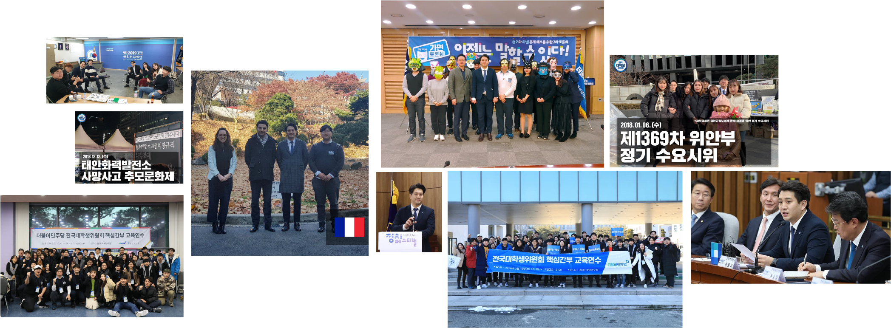

전국대학생위원회는
더불어민주당 전국대학생위원회는 당헌당규에 따라 대학생의 자치활동 수립과 교류 활성화, 대학생 관련 정책의 수립 등을 위한 조직입니다.
대학생을 넘어 20대 청년을 대변하기 위해, 20대의 시선으로 정치 현안을 바라보고 더 나은 대한민국을 꿈꾸고 있습니다.

위원장
전용기
전국대학생위원장
2010년 초, 갓 상경했을 때 보았던 신문기사가 아직 잊혀지지 않습니다. 오늘 나는 대학을 그만둔다. 아니 거부한다. 기사 속에는 상품으로 간택받기보다는, 스스로 선택하는 삶을 위해 대학을 떠난 한 대학생의 절규가 담겨있었습니다. 고된 경쟁의 끝이 결국 또 다른 경쟁이란 사실은 20살의 저를 불안하고 초조하게 만들었습니다.
그 불안이 저만의 것은 아닐 것입니다. 그러나 그 모습이 세상의 전부는 아닐 것입니다. 세상을 좀 더 따뜻하고 편안하게 바꾸는 것이 바로 정치의 역할이기 때문입니다. 그렇게 꿈꾸고 그리던 정치로 여러분과 함께 세상을 바꾸고 싶습니다.
분과위원회
전국대학생위원회에는 6개의 분과위원회가 활동하고 있습니다.